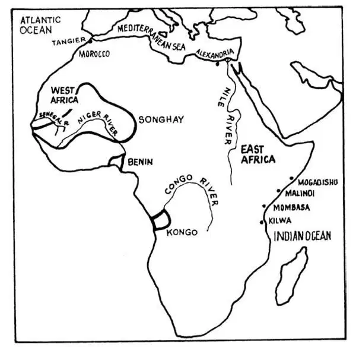
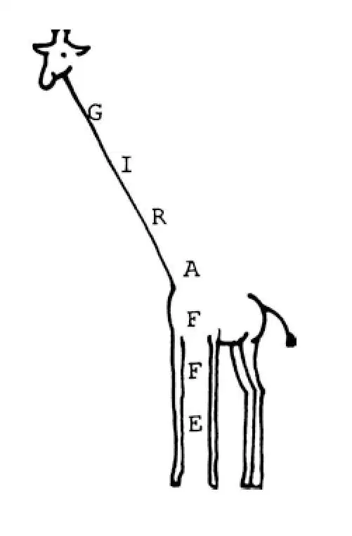

65
Along the Coast of East Africa
沿着东非海岸

AMERICA was not the only place where adventurers sailed in search of excitement and wealth. While the Spanish were conquering the Aztecs, Incas, and Mayas in America, the Portuguese went to Africa. Just as Christopher Columbus was looking for a route to India by sailing west, the Portuguese were also looking for a way to sail to India and China. They decided to try sailing around Africa. They didn't know for sure that they could ever find an end to that continent—a way around—but they wanted to try.
Before Columbus got to America, several Portuguese explorers sailed south along the coast of West Africa. They passed the mouth of the Senegal River that had been in Mansa Musa's empire. Then they rounded the corner of the great continent and soon came to Benin, an empire in a part of Africa that is now Nigeria. Benin was ruled by a king called an oba and was known for its beautiful artwork. If you visit a large art museum, you can see carvings and statues and ceremonial masks made in Benin. Farther south still, the ships passed an empire called Kongo. One explorer even got as far as the very southern tip of Africa, but then he turned around and headed for home.
Five years after Columbus left Spain, Vasco da Gama left Portugal. He finally succeeded in sailing around that southern tip of Africa and into the Indian Ocean. He sailed up the east side of Africa. Then he traveled on toward India. While he was still in East Africa, he found wonderful cities that he thought nobody knew about.
Way back, in fact, some Europeans had known that these cities were there. Greeks and Romans as well as Egyptians all knew their way to East Africa. Soon after the time of Christ, a Greek guidebook for sailors told how to get to the different ports and said that ivory, tortoise shell, and coconut oil were traded there. During these early years, the towns were small, with perhaps one thousand people living in them.
Around 900 A.D. or about one hundred years after Charlemagne, at a time when very few Europeans were doing much traveling and all had forgotten about East Africa, an Arab geographer visited there. He was on his way home from a trip to India and China. He wrote that in East Africa the climate was warm and the land fertile and that gold and many other wonderful things were found there. We know now that a lot of traders visited East Africa during those first thousand years after Christ. Archeologists have found large numbers of coins from Persia, Greece, Rome, Arabia, and even India and China there. They have found pieces of pottery and glassware from China, India, and Arabia too. The Arabs visited East Africa most. In fact, some of the Arabs who went there to trade settled down and made their homes there. Soon the language spoken by the Africans had some Arab words mixed into it. Then Arabs began writing that language in Arabic letters. That language is called Swahili. Swahili is still spoken all through East Africa.
The most famous early traveler to visit East Africa was a Muslim from Tangier, a city in North Africa. His name was Ibn Battuta. He was the Marco Polo of the Muslim world. In fact, he lived about the same time that Marco Polo did, in the 1300s. The stories of Ibn Battuta's travels were written in Arabic, so most Europeans never read them, but he was very famous where people knew how to read Arabic.
That Ibn Battuta really got around! He left home when he was twenty years old to go on the pilgrimage to the Muslim holy city of Mecca. After he got there, he was having such an interesting time traveling that he didn't go back home for twenty-five years. He visited southern Russia, Persia, India, and Indonesia. And just like Marco Polo, he got all the way to China. His goal was to go everyplace in the world where there were Muslims, and he did.

City states of East Africa（东非的城邦）
One of the most interesting places he visited was East Africa. A lot of the people there were Muslims. As you know, some were Arabs. Most were Africans. Sometimes Africans had married Arabs, and their children were amixture of the two.
By Ibn Battuta's time, the trading towns had grown into cities. They were city states, independent like the earlier Greek city states. Each city had its own ruler, and each was surrounded by countryside where men and women farmed. You can still visit many of these cities in East Africa. The cities had names like Mogadishu, Malindi, Mombasa, and Kilwa. Try saying those names. They may seem strange at first, but soon they will seem easy to you.
Ibn Battuta described Kilwa as the most beautiful town in the whole world. There were fountains and public squares, he said. The main palace was on a high cliff above the Indian Ocean, had one hundred rooms, and an eight-sided swimming pool. How would you like to have been a guest of the ruler in Kilwa?
The cities all had ports where large vessels tied up. Arab ships were sixty to seventy feet long. Even larger ships came from Persia and India. Occasionally Chinese fleets of hundreds of huge ships visited the East African ports. Africans sold gold, iron, and ivory in exchange for silks, glassware, and tools. Once, the city of Malindi sent a wonderful gift to the emperor of China. Can you imagine something—that was not gold—that the ruler of Malindi might think would be a good surprise for the wealthy and powerful Chinese emperor? Something that did not exist in China? It must have made a big impression on the Chinese, because they wrote all about it—and that's how we still know about this gift. Well, have you guessed? It was a

That's certainly something they didn't have in China!
The rulers of those city states must have been pretty smart because one thing that they didn't have much of was war. There were some minor squabbles, but most of the cities didn't even have large fortifications except around the ports. They didn't think they needed them because they weren't fighting each other all the time. This meant that they could spend all their energy on trade and farming. I'm sure it's one reason why these cities were so prosperous.
Eventually, though, they were attacked. Then they had a real problem. Can you guess what country decided to take over these cities? I'll give you a hint. There was a country that wanted to take control of the trade routes—that wanted to move in on the trade with India and China. Well, you may have guessed it by now. That country was Portugal. When the Portuguese discovered that not only was there gold in Africa, but that the East Africans already had the trade with the East that both Portugal and Spain wanted, they were ready to move in.
The Portuguese came with big guns on their ships. When a city didn't just give in to them, they attacked. Mombasa was completely destroyed. All the people there were killed.
The East Africans knew they couldn't defeat the big ships and their cannon. So they used another strategy to get rid of the Portuguese. They stopped the gold trade. The miners stopped mining gold. The merchants stopped shipping gold. Gradually the ports closed down. The people from the cities moved into the countryside and became farmers. Now, the Portuguese weren't interested in farms so except for keeping a few places where their ships could stop to get fuel and supplies on the long voyage to the Indies—they lost interest in East Africa. The people had lost their cities, but they had won their peace.
【中文阅读】
美洲不是冒险家们出海寻求刺激和财富的唯一地方。当西班牙人在美洲征服阿兹特克人、印加人和玛雅人的时候，葡萄牙人去了非洲。就像克里斯托弗•哥伦布向西航行寻找去印度的航线一样，葡萄牙人也在寻找去印度和中国的航线。他们决定试试绕非洲航行。他们不大确定是否能够发现非洲大陆的尽头——一条绕过去的路——但是他们还是想试一试。
哥伦布到达美洲之前，几个葡萄牙探险者沿着西非海岸向南航行。他们经过曾经是曼沙•穆萨帝国境内的塞内加尔河河口。然后他们绕过大陆的拐角，很快来到了贝宁。贝宁是一个帝国，在非洲，今天是尼日利亚。贝宁称国王为“奥巴”，以美丽的艺术品而闻名于世。如果你参观大型艺术博物馆，就可以看见产自贝宁的雕刻品、雕像和宗教仪式用的面具。他们的船只继续往南，经过一个叫刚果的帝国。有一个 探险家甚至到达了非洲的最南端，但是他接着调转船头打道回府了。
哥伦布离开西班牙踏上航程五年之后，瓦斯科•达•伽马也从葡萄牙出发了。最终他成功地驾船绕过非洲最南端，驶入印度洋。他沿着非洲东侧向北航行，然后继续朝印度前行。当他还在东非时，他发现了一些奇妙城市，以为这些城市还没有人知道。
事实上，很久以前一些欧洲人就已经知道这些城市在那儿了。希腊人、罗马人和埃及人都知道通往东非的路。在耶稣诞生后不久，希腊有本水手指南手册就讲到如何到达不同的港口，还说这些港口可以买卖象牙、龟壳和椰子油。在早期那些年，那里的城镇都很小，大约每个镇子就住着一千多人。
大约公元900年，查理曼死后大约一百年，有段时间欧洲人很少出海航行，几乎忘记了还有东非这个地方，这个时候有个阿拉伯地理学家到了东非。他是在印度和中国旅行之后回家的路上经过那里。他在书中写道那里气候温暖、土地肥沃，人们在那里发现了黄金和其他珍稀之物。如今我们知道在耶稣诞生后的一千年间，许多商人到过东非。考古学家在东非发现了大量波斯、希腊、罗马、阿拉伯的钱币，甚至还有印度和中国的钱币。他们还发现了中国、印度和阿拉伯的陶器和玻璃器皿的碎片。阿拉伯人到东非去的最多。甚至，有些去那里做生意的阿拉伯人还定居下来，在那里安了家。很快，非洲人说的语言中就掺杂了一些阿拉伯语词汇。之后阿拉伯人开始用阿拉伯字母把这种语言记录下来。这种语言被称为斯瓦希里语。现在斯瓦希里语还是整个东非的通用语言。
早期游历东非的最出名的旅行者是一个来自北非城市丹吉尔的穆斯林，名叫伊本•白图泰。他是穆斯林世界的马可•波罗。其实他和14世纪初的马可•波罗大约生活在同一时代。伊本•白图泰的游记故事是用阿拉伯语写成的，所以大多数欧洲人从未读过，但是在懂阿拉伯语人的地方，他是非常出名的。
伊本•白图泰真的周游了世界！20岁时他离开了家乡去穆斯林圣城麦加朝圣。到了那里以后，他游兴正浓，一发而不可收，接着就在外游历了二十五年从没回过家。他去过俄罗斯南部、波斯、印度和印度尼西亚。他和马可•波罗一样，还不远万里到了中国。他的目标是走遍世界上每一个有穆斯林的地方，他做到了。
他去过的最有意思的地方之一是东非。那里有很多穆斯林。我在前面说过，有些是阿拉伯人，大多数是非洲人。有时非洲人和阿拉伯人通婚，他们的孩子就是这两种人的混血儿。
到了伊本•白图泰时代，那些经商小镇已经发展为城市。这些城市都是相互独立的城邦，就像早期希腊的城邦一样。每一个城市都有自己的统治者，每一个城市周围都有乡村，男男女女都在那里耕种。现在你还可以到东非这些城市去游览。这些城市有着像摩加迪沙、马林迪、蒙巴萨和基尔瓦这样的名字。试着念一念这些名字，开始你也许觉得这些名字有点奇怪，不过重复几次就顺口了。
伊本•白图泰把基尔瓦描述成全世界最美丽的城镇。他说那儿有多处喷泉和公共广场。城市最大的宫殿在一个很高的悬崖上，俯瞰着印度洋。宫殿有一百间房屋和一个八角形的游泳池。你想不想去基尔瓦的王宫做客呢？
这些城市都有供大型船舶停泊的港口。阿拉伯的船只长达60到70英尺。甚至还有从波斯和印度来的更大的船舶。偶尔数百艘巨型船组成的中国船队也来到东非的港口。非洲人用黄金、铁和象牙来交换丝绸、玻璃器皿和各种工具。一次，马林迪城送了一件奇妙的礼物给中国皇帝。你能想象是什么吗——不是黄金哦——马林迪的统治者也许想给富有强大的中国皇帝一个惊喜，就送了一个中国没有的东西。这个东西一定给中国人留下了很深的印象。因为他们把这件事的全部经过都写下来了——我们现在才能知道有这样一个礼物。那么，你猜到了吗？这个礼物就是一头
这当然是中国没有的东西了！
有件事可以说明那些城邦的首脑肯定非常聪明，他们之间很少发生战争。虽然互相有些小的争端，但是除了港口周围之外，大多数城市甚至没有大型防御工事。他们认为不需要这些东西，因为他们从来不会没完没了地打下去。这意味着他们可以把全部的精力用在做生意和农耕上。我敢肯定这些城市之所以如此繁荣，这就是一个原因。
不过最终他们还是遭到了攻击。后来他们真的有了一个难题。你能猜出是哪个国家想接管这些城市吗？我给你点提示。有个国家想控制这些贸易航线——想要插手与印度、中国的贸易。好吧，现在也许你已经猜到了。这个国家是葡萄牙。当葡萄牙人发现非洲不仅有黄金，而且东非人已经和东方国家有了贸易往来，而这正是葡萄牙和西班牙都向往的，他们就准备插手了。
葡萄牙人随船还运来了枪炮。当一个城市不肯投降的时候，他们就攻城。蒙巴萨被彻底摧毁了。城里所有的人全被杀害了。
东非人知道他们不可能击败这些坚船利炮，所以他们用另一种策略赶走葡萄牙人。他们停止了黄金贸易。矿工们不再开采黄金。商人们也不再运送黄金。渐渐地，港口都关闭了。人们从城市搬到了乡村，成了农民。当然，葡萄牙人对农场不感兴趣，于是——除了保留几个港口让去印度群岛的船只在长途航行中可以停靠补充燃料和给养——他们不再留恋东非。东非人失去了城市，但却得到了安宁。